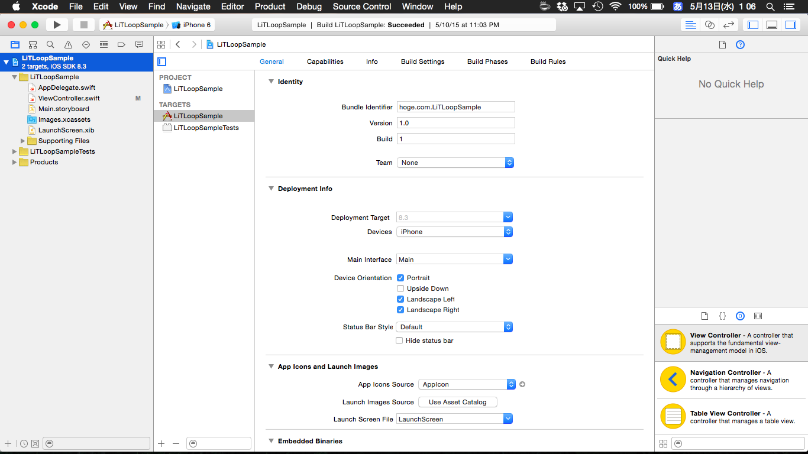

Swift 入門 ---- やること ・プロジェクトの作り方 ・Xcodeの画面の見方 ・簡単なGUIの作成方法 ・簡単なSwiftの書き方 ---- やること ・<font color="red">プロジェクトの作り方</font> ・Xcodeの画面の見方 ・簡単なGUIの作成方法 ・簡単なSwiftの書き方 ---- 実演 ---- やること ・プロジェクトの作り方 ・<font color="red">Xcodeの画面の見方 </font> ・簡単なGUIの作成方法 ・簡単なSwiftの書き方 ----  ---- 実際に 触ってみよう ---- <font color="blue">AppDelegate.swift</font> ->アプリの起動や終了時に関係 <font color="blue">ViewController.swift</font> ->主にコードを書いていくところ <font color="blue">Main.storyboard</font> ->GUIの設計 ---- やること ・プロジェクトの作り方 ・Xcodeの画面の見方 ・<font color="red">簡単なGUIの作成方法</font> ・簡単なSwiftの書き方 ---- 実演 ・ラベルの設置 ・ボタンの設置 ・画面遷移 ---- やること ・プロジェクトの作り方 ・Xcodeの画面の見方 ・簡単なGUIの作成方法 ・<font color="red">簡単なSwiftの書き方</font> ---- 実演 ・カウントアップ countLabel.text = String (countLabel.text!.toInt()! + 1) ---- [Swift] Optional型についてのまとめ - Qiita http://qiita.com/cotrpepe/items/e30c7442733b93adf46a ---- お わ り